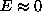
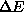
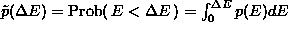
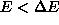
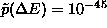
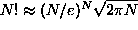
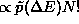
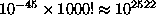

In principle, simulated annealing is able to reach arbitrary accuracy at the expense of computer time. We should, however, remark on a few points. Unlike other minimisation problems, we are not really interested in the solutions that put E=0 exactly. Most likely, these are the data set itself and a few simple transformations of it that preserve the cost function (e.g. a time reversed copy). On the other hand, combinatorics makes it very unlikely that we ever reach one of these few of the N! permutations, unless N is really small or the constraints grossly over-specify the problem. This can be the case, for example, if we include all possible lags of the autocorrelation function, which gives as many (nonlinear) equations as unknowns, I=N. These may close for small N in the space of permutations. In such extreme situations, it is possible to include extra cost terms penalising closeness to one of the trivial transformations of the data. Let us note that if the surrogates are ``too similar'' to the data, this does not in itself affect the validity of the test. Only the discrimination power may be severely reduced.
Now, if we don't want to reach E=0, how can we be sure that there are enough independent realisations with ? The theoretical answer depends on the form of the constraints in a complicated way and cannot be given in general. We can, however, offer a heuristic argument that the number of configurations with E smaller than some  grows fast for large N. Suppose that for large N the probability distribution of E converges to an asymptotic form p(E). Assume further that  is nonzero but maybe very small. This is evidently true for autocorrelations, for example. While thus the probability to find  in a random draw from the distribution of the data may be extremely small, say  at 10 sigmas from the mean energy, the total number of permutations, figuring as the number of draws, grows as , that is, much faster than exponentially. Thus, we expect the number of permutations with to be . For example, .
In any case, we can always monitor the convergence of the cost function to avoid spurious results due to residual inaccuracy in the surrogates. As we will discuss below, it can also be a good idea to test the surrogates with a linear test statistic before performing the actual nonlinearity test.